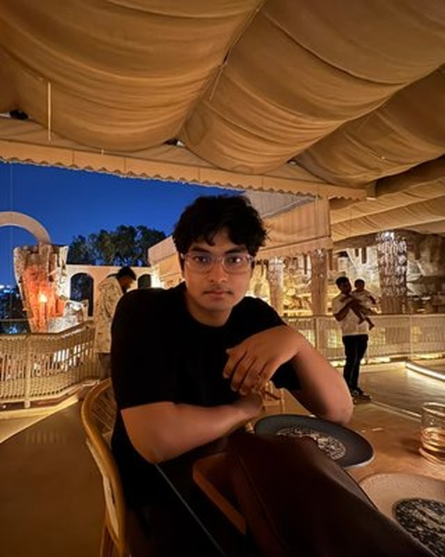
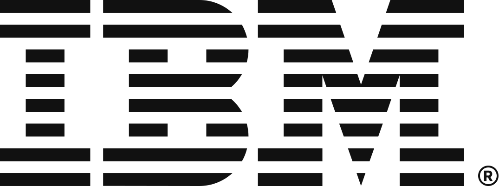
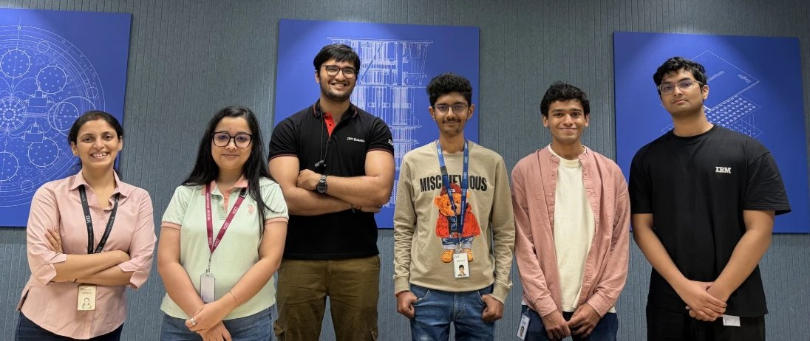
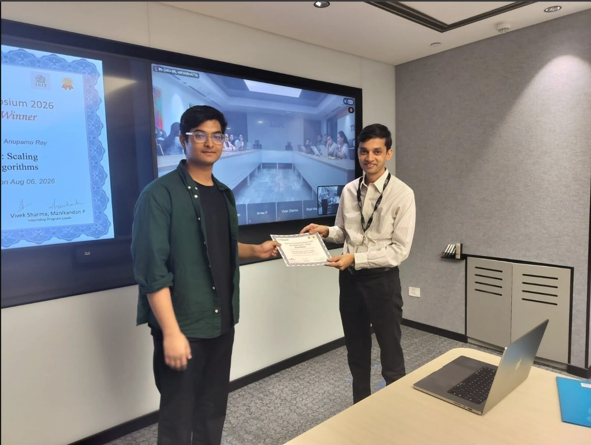
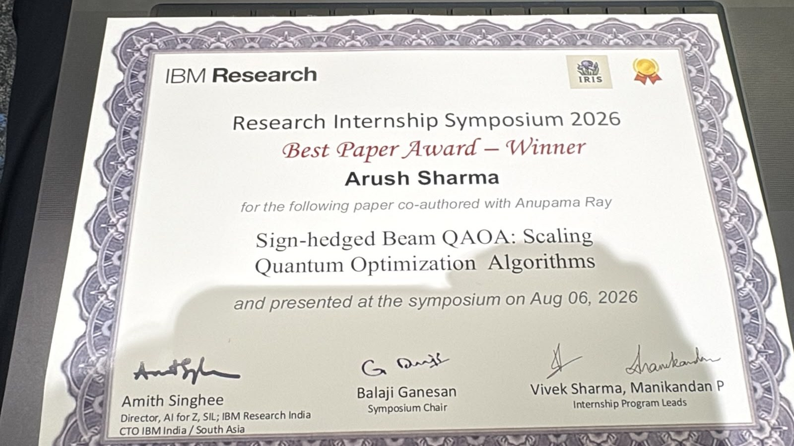

Research engineer intern · New Delhi,
I make models faster.
Research and engineering is my moat. 1.35× faster decoding on a 30B diffusion language model at Conscious Engines. Best Paper at IBM Research.
Diffusion language models unmask a whole batch block of tokens at once, so a small drafter can

Sign-hedged Beam QAOA
Won the Best Paper Award at the IBM Research Internship Symposium. Approximation ratio 1.000 on IBM Marrakesh hardware.
Read the paper entry ↓Draft-aligned decoding
A 1.7B drafter fills each 32-token block and a LoRA judge keeps the tokens it trusts. Passes through the 30B model fall from 12.8 to 7.6 per block.
See the work ↓Entity resolution
A cost-tiered cascade over 1.7M business records: e5 blocker, cross-encoders, LightGBM, then Qwen LoRA judges. 5th on the public leaderboard.
See the project ↓Papers
Three papers: one with an award, two under review. Each row opens for the method, my part and the numbers.
-
Method
A multi-agent loop proposed, mutated, critiqued and evaluated analytic QAOA schedules, evolving the linear ramp into a fixed power-law schedule. The schedule then drives a width-B sign-hedged beam over the recursive eliminations, evaluated on simulators, MPS and IBM hardware.
My part
The algorithm-discovery loop, the beam-hedged recursion, and the simulator, MPS and hardware evaluations.
Numbers
- 0.998approximation ratio, SK model n=20, simulation (2.1× over baseline)
- 1.000on IBM Marrakesh hardware
- 0.984MaxCut n=60, 17.6% above QAOA
- 0.98320-asset portfolio, 26% above RQAOA
-
Method
A masked causal ViT with a distributional head predicts the latent distribution of future patches, trained with a β-NLL against frozen target embeddings. At fine-tuning time the predicted variance becomes an uncertainty score that modulates the classification and segmentation losses.
My part
The mean/variance and anti-collapse losses, and the chest X-ray and ultrasound experiments.
Numbers
- 0.987chest X-ray AUROC (+2.0 pts over prior best)
- 0.938BUSI breast-ultrasound AUROC (+2.1 pts)
- 0.604segmentation IoU (+1.3 pts)
-
Method
A subject-specific brain graph is built from functional connectivity. A position-aware long-range encoder keeps every region's token, while a module-aware branch learns cluster context and fuses it back through a reliability-weighted gate, so regional identity survives to the readout.
My part
The ablation suite, and co-writing the methodology and experiments.
Work
-
Aug 2026 – now
Conscious Engines consciousengines.com ↗
Research Engineer Intern · Stackr Labs, backed by a16z
Draft-aligned decoding for SDAR-30B-A3B, a 30B-parameter diffusion mixture-of-experts LM. A 1.7B drafter pre-fills each 32-token block and a self-distilled LoRA judge accepts or re-masks each token. Against the 30B model's own block decoding, large-model passes fall from 12.8 to 7.6 per block (1.68×) and throughput rises 1.35× at comparable accuracy; the gap is drafter and judge overhead.
Also training FLARE-2B, a Qwen3.5-2B model converted to diffusion decoding, through 9.66B tokens on 8×H200 with resumable checkpoints. Code is internal; I am glad to walk through the method and the ablations.
diffusion LMsspeculative decodingLoRADDP/FSDPH200
-
May – Aug 2026

IBM Research India research.ibm.com ↗
Research Intern, AI for Quantum · with Dr. Anupama Ray
Built a multi-agent loop in which model agents proposed, mutated, critiqued and evaluated analytic QAOA schedules; used the best schedule in sign-hedged beam RQAOA and evaluated it on simulators, MPS and IBM hardware. The work won the Best Paper Award at the internship symposium.
QAOAbeam searchagentic searchIBM Quantum
- Jun 2025 – now
-
Jun – Nov 2025
Aeroqube
Agentic AI Intern
Fine-tuned MedGemma 4B for a medical-tourism assistant and deployed it as a Dockerized AWS pipeline with retrieval-augmented generation and LangSmith evaluation.
MedGemmaRAGAWS

With colleagues and fellow interns at IBM Research India, summer 2026. I'm on the right, in the black T-shirt.
Projects
PriorityKV
Structure-aware KV-cache eviction for long agent traces. Protects system, tool-schema, constraint, sink and recent tokens instead of the oldest ones. Over 15,360 generations on Qwen3-8B and Llama-3.1-8B it kept task state in 112/120 cases versus 1/120 for position-blind eviction; KV payload −28%, peak GPU memory −13%, at 11–12% latency overhead.
PyTorchTransformersKV cache
Business entity resolution
Amazon ML Challenge 2026. A cost-tiered cascade over 1.7M entities: a fine-tuned multilingual-e5 blocker (99.5% recall at top-20), four cross-encoders and LightGBM resolve 93%, and six Qwen3.5-4B LoRA judges take the uncertain 6%. Macro F0.5 0.99151 on the public leaderboard.
e5bge-rerankerLoRALightGBM
AlignmentLab
Matched-compute comparison of SFT, DPO and GRPO/RLVR on Qwen3-8B and 14B: does RLVR add capability, or only sharpen sampling? Results and recipes in the README.
TRLDPOGRPOvLLM
Arista Intelligent RRM
Inter IIT Tech Meet 14.0. Wi-Fi radio-resource management that learns channel, power and bandwidth from signal measurements with a GNN state encoder and offline conservative Q-learning on Linux virtual access points; edge-client throughput +18% with zero configuration churn.
GNNoffline RLSDR
ReVival
Seven agents (three Bedrock vision/LLM, four deterministic) that grade returned products from photos or video and route them back to market. I built the FastAPI backend: seven DynamoDB tables, S3 reports, an embedding cache that skips redundant grading calls. Demo at revival-rose.vercel.app
FastAPIBedrockDynamoDB
Smaller projects
Hindi TinyStories GPT
A 33M-parameter decoder-only transformer (RoPE, RMSNorm, SwiGLU) written from scratch in PyTorch, trained on ~100M tokens of Hindi children's stories.
2026AtomMail
An email assistant that reads threads and attachments via OCR and drafts replies in the user's tone. 2nd prize, Hackfest.
2025DeepLense
Physics-informed gravitational-lens classification; 0.9976 ROC-AUC, weights public on Hugging Face.
2025Stanford CS336
Tokenizers, transformers and training loops implemented from the ground up.
2025
Awards & academics
- Aug 2026
Best Paper Award
IBM Research Internship Symposium 2026 · certificate
- 2026
5th of 80,000 teams
Amazon ML Challenge 2026, public leaderboard
- 2025
12th of 23 IITs
Inter IIT Tech Meet 14.0, Arista Intelligent RRM
- 2025
2nd prize, Hackfest
AtomMail
- 2025
Amazon ML Summer School
Selected, top 3,000 of 134,000 applicants
- 2023
All-India Rank 5181, JEE Advanced
Top 0.47% of 1.11 million candidates
Education
IIT (ISM) Dhanbad
B.Tech, Electronics and Communication Engineering · 2023 – April 2027
CGPA 8.19 / 10. Coursework and research across signal processing, machine learning and quantum optimisation.
Skills
- Daily
- Python, PyTorch, Hugging Face Transformers, TRL/PEFT, vLLM
- Training
- SFT, DPO, GRPO/RLVR, LoRA/QLoRA, DDP/FSDP, Triton, KV-cache optimisation, quantisation
- Systems
- C/C++, SQL, CUDA, Docker, AWS (Bedrock, S3, DynamoDB), FastAPI, Next.js
Photos

